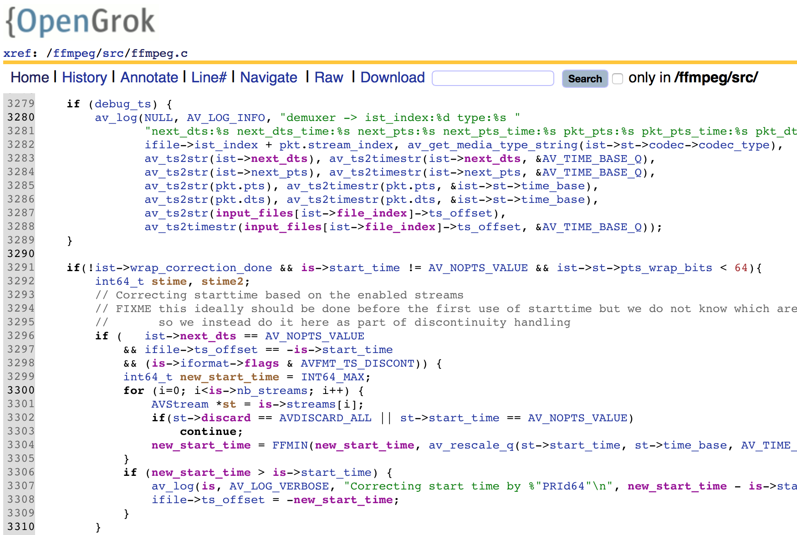

OpenGrok is Awesome
OpenGrok is an awesome and handy tool for analyzing complex software system. As it claims, it is a fast source code search and cross reference engine using famous Lucene. For Android developers, you may have known AndroidXref which is built using OpenGrok.
This short guide shows a minimized steps to get OpenGrok up and running on Mac OS X. I prefers this kind of quick-and-dirty way for browsing source code on my desktop or laptop. Refer to official OpenGrok installation guide if you intent to setup a server instead.
Installation
The most effortless way to install Tomcat is using Homebrew:
$ brew install tomcat
If you have not installed Exuberant Ctags before, you can do so now:
$ brew install ctags
Then you have to download OpenGrok from its official site (I am using 0.12.1):
$ wget -O - http://java.net/projects/opengrok/downloads/download/opengrok-0.12.1.tar.gz | tar xvz
We have to deploy OpenGrok to Tomcat which is installed under /usr/local/Cellar/tomcat (you may need to change the 8.0.17 part depending on the exact Tomcat version you installed):
$ OPENGROK_TOMCAT_BASE=/usr/local/Cellar/tomcat/8.0.17/libexec opengrok-0.12.1/bin/OpenGrok deploy
With default configuration, you should be able to see OpenGrok after starting Tomcat:
$ catalina start
$ open http://localhost:8080/source
You should see OpenGrok page with no source to search.
Indexing Source
Now it’s time to index your source:
$ OPENGROK_INSTANCE_BASE=opengrok-0.12.1 opengrok-0.12.1/bin/OpenGrok index /path/to/your/source
Note that OPENGROK_INSTANCE_BASE specifies where to store index data. After you have done with it, stop Tomcat by:
$ catalina stop
That’s it. Enjoy your code reading.